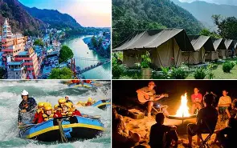

..Top Camping Destinations..
* Rishikesh, Uttarakhand: Known as the "Yoga Capital of the World," Rishikesh offers riverside camping experiences along the Ganges. Visitors can enjoy adventure sports like white-water rafting, yoga sessions, and evening aarti ceremonies. The best time to visit is from March to November, with camping options ranging from budget tents to luxury accommodations.
* Tso Moriri Lake, Ladakh: This stunning high-altitude lake is the highest in the world and offers a unique camping experience. The best time to visit is from May to September. Campers can enjoy breathtaking views, comfortable tents, and opportunities for trekking and exploring the nearby region.
* Spiti Valley, Himachal Pradesh: A paradise for adventure enthusiasts, Spiti Valley offers camping amidst stunning landscapes and clear night skies. Popular camping spots include Chandratal and Kaza. The experience includes home-cooked meals and minimal facilities, making it ideal for those seeking a rustic adventure.
* Jaisalmer, Rajasthan: Experience desert camping in Jaisalmer, where you can stay in luxury tents and enjoy camel safaris, folk dances, and traditional Rajasthani cuisine. The best time to visit is from October to March, with camping options ranging from basic to luxurious.
* Kullu, Himachal Pradesh: Nestled in the Himalayas, Kullu offers a variety of camping experiences with stunning mountain views. Activities include trekking, paragliding, and river rafting. The best time to visit is from March to June.
* Coorg, Karnataka: Known for its coffee plantations, Coorg offers camping experiences amidst lush greenery. Visitors can enjoy guided tours, wildlife spotting, and treks to waterfalls. The best time to visit is from October to March.
* Kanha National Park, Madhya Pradesh: Camping in the largest tiger reserve in India offers a unique wildlife experience. Visitors can enjoy jungle safaris and bird watching in a serene environment. The best time to visit is from October to June.
* Anjuna Beach, Goa: For a beach camping experience, Anjuna Beach offers a vibrant atmosphere with options for water sports, nightlife, and relaxation by the sea. The best time to visit is from November to February.
